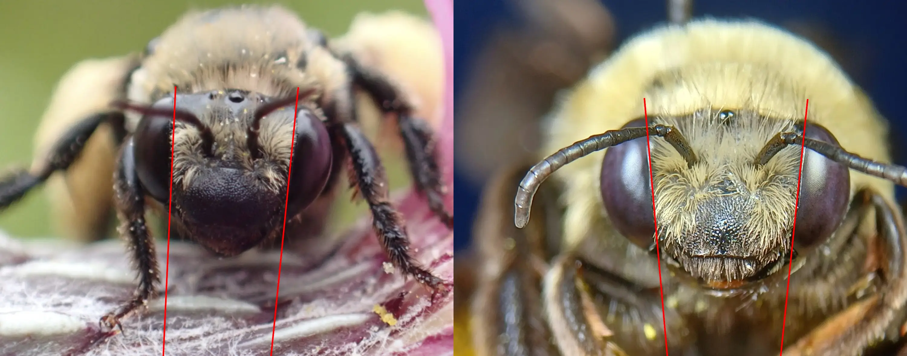
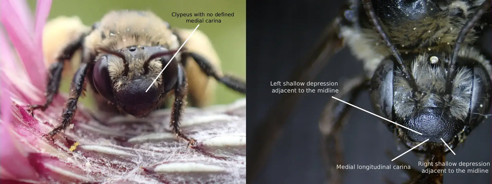
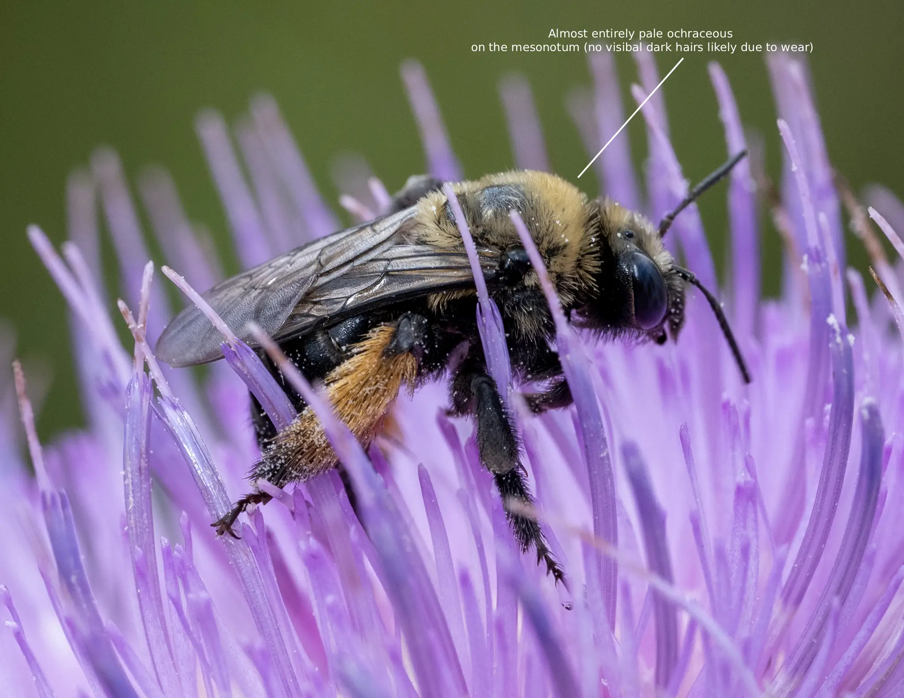
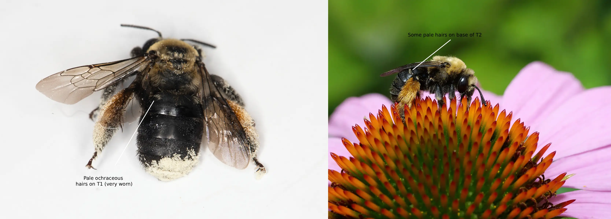
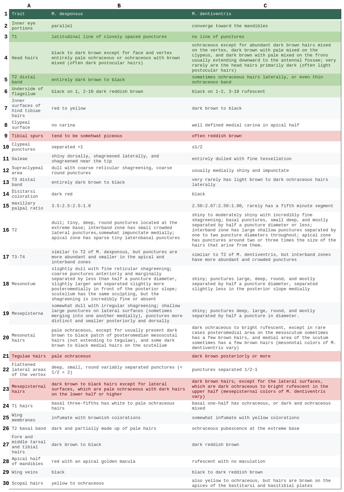
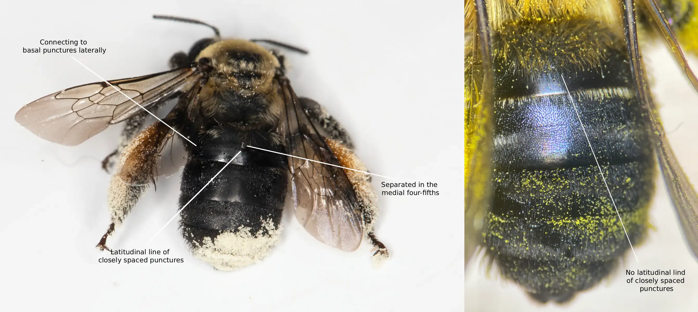
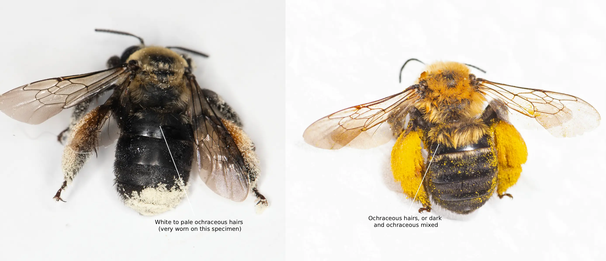
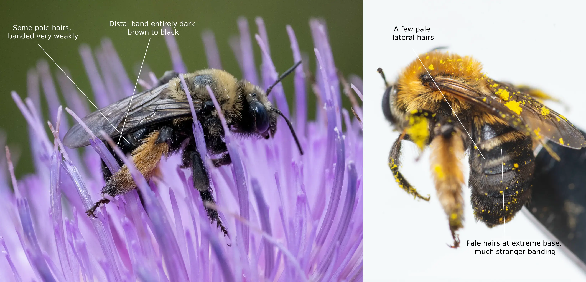

Melissodes desponsus Smith, the eastern thistle long-horned bee, is a specialized species of Nearctic bee
native to, and occurring in, the eastern United States (Laberge, 1956a) and eastern portions of Canada (GBIF Secretariat 2023). Like
all Melissodes, male M. desponsus have long antennae, and the females have short antennae in comparison (see "Genus" page for more information).
This species resides in the subgenus M. (Eumelissodes) Laberge, and is closely related to M. rivalis (treated more thoroughly in
“Taxonomy and Phylogeny”). Both sexes of M. desponsus are somewhat distinct from other M. (Eumelissodes) Laberge (besides M. rivalis),
and the females can be distinguished by their often parallel inner eye portions, the dark brown to black hairs of inner surfaces of the
hind bastitarsi, and the mostly dark brown to black pubescent bands on the terga. (Laberge, 1956; Laberge, 1961). Males can be distinguished
from that of other M. (Eumelissodes) Laberge by their first flagellar segment, which is about 0.4 or more times the maximum length of the
second, the dark pubescent bands on terga two through five, and by the pale pubescence on the mesosoma (see “Description and
Identification” for more information on both sexes) (Laberge, 1956; Laberge, 1961). M. desponsus is seemingly an oligolege of the genus Cirsum (Laberge, 1956),
hence their common name.
Description and Identification
Based on Laberge's (1956a) description, Melissodes desponsus are medium sized setacouse bees. Females range from 11.5 to 16 millimeters
in length and 4.0 to 5.5 millimeters in width (width measured at the widest portion of the metasoma). Males are a bit smaller, being about
9 to 14 millimeters in length and 2.5 to 4.5 millimeters in width (width measured at the widest portion of the metasoma). The female's
first flagellar segment is on average 2.03 times the size of the second flagellar segment (standard deviation 0.020). The males are the
opposite where the second flagellar segment is on average 2.93 times the size of the first flagellar segment (standard deviation 0.059).
Female wing length is 25.21 millimeters on average (standard deviation 0.157 millimeters), and male wing length is 23.97 millimeters on
average (standard deviation 0.980 millimeters). Females have an average of 14 hamuli (standard deviation 0.229), while males have an average
of 13 (standard deviation 0.218).
Female
According to Laberge (1956a), the description of female M. desponsus is as follows: the integument is black, differing at the eyes,
which are a grayish blue to green; the wing membranes, which are infumate and slightly brown colored; the wing veins, which are black;
the apical half of the mandibles, which are rufescent, and in the apical area of the apical half, there is a wide golden macula; the
apical margin of the clypeus, which is usually red; the underside of flagellar segments 2-10, which are reddish brown; the distitarsi,
which is dark red; the tegulae, which are piceous; and the tibial spurs, which are piceous. The inner eye portions are parallel to one another (Fig. 1). The surface of the clypeus is somewhat shiny,
but dulled with coarse transverse shagreening, and has punctures that are small, crowded, and separated by less than one puncture diameter.
The clypeus doesn’t have a distinct carina medially (Fig. 2). The surface of the supraclypeus is dulled with coarse reticular shagreening, and has
large, deep, well-defined, round punctures. The surface of the flattened area of the vertex is shiny to moderately, finely shagreened,
and has deep and small round punctures that are variably separated. In some places, the punctures are separated by less than half a puncture
diameter, and in others by more than half, but less than two puncture diameters (< ½ < 2). This flattened area extends posteromedially
from the apices of the compound eyes. The four maxillary palpal segments decrease in length from basal to distal in a ratio of about 3.5:2.5:2.5:1.0,
and the last segment is usually even smaller. The galeae are dorsally shiny, shagreened apically and laterally, and have small widely
separated punctures with small straight hairs arising from them. The mesonotum is slightly dull with fine reticular shagreening and has coarse
punctures. These punctures are anteriorly and marginally separated by less than half a puncture diameter, and they’re slightly larger and
separated slightly more posteromedially in front of the posterior slope. However, the scutellum is very similar to the rest of the mesonotum,
but has absent or finer shagreening. The surface of the metanotum is dulled by tessellation, and has variably spaced, scattered punctures.
The propodeum’s dorsal surface is basally reticulorugose and is coarsely punctate apically and on the posterior surface excluding the upper
impunctate median triangle on the posterior surface. The lateral surfaces of the propodeum are matte and dull from coarse, dense tessellation,
and are coarsely punctate. The lateral surface of the mesepisterna is fairly dull from irregular shagreening, and has large and shallow
punctures that are separated by less than half a puncture diameter. These punctures are very dense medially, with some overlapping and merging
into one another, but dorsally and posteriorly, they become smaller and more distinct.
The first tergum is dulled and has a latitudinal line of closely spaced punctures that appear just slightly past the middle of the tergum
posteriorly. This line of punctures is separated posteriorly from the small, round, shallow, and abundant basal punctures in the medial four-fifths;
punctures seemingly connect laterally (Fig. 3). The second tergum has tiny deep round punctures at the very base, and the interband zone has small crowded
lateral punctures, but is generally impunctate medially. The second tergum is dull and has tiny sparse punctures laterobasally in the apical zone.
The third and fourth terga are similar to that of the second, but the punctures are more abundant in the apical and interband zones and smaller.
M. desponsus has a somewhat small range of setal variation, the most common description of which follows. The hairs on the head are black to
dark brown, except for the vertex and face, which are completely pale ochraceous, and sometimes a mix of ochraceous and dark brown. Laberge (1956a)
states “Metasoma with pale ochraceous hairs except as follows:...” then proceeds to list mesosomal structures, and later states “Mesosoma with
dark brown to black hairs except as follows:...” then proceeds to list metasomal structures. This is most likely a typo and will be herein treated
as such. The mesonotal hairs are pale ochraceous except for the usually present posteromedian patch of dark brown to black hairs on the mesoscutum
that doesn’t surpass the tegulae, and usually isn’t larger than that of the scutellum, and the medial dark brown to black hairs on the scutellum (Fig. 4). The
general surfaces of the mesepisterna have dark brown to black hairs and the lateral surfaces have dark hairs on the lower half and sometimes higher (Fig. 5).
The lateral surfaces of the propodeum also have dark brown to black hairs. The metasoma has dark brown to black hairs except for the first tergum’s
basal three-fifths, which is white to pale ochraceous and often mixed with darker hairs, and the basal band of the second tergum, which usually
has some pale hairs (Fig. 6). The leg hairs are dark brown to black other than the ochraceous to yellow scopa, and the red to yellow hairs on the inner
surfaces of the hind tibiae (Fig. 7).
Photo credits: (right) Isabel Dalton (All Rights Reserved); (left) David Mantack (CC-BY-NC 4.0)
Fig. 1. A comparison of the inner eye margins of a femal M. desponsus (left), and a female M. dentiventris (right), illustrating the parallel nature of the inner eye margins of the female M. desponsus.
Photo credits: (right) Isabel Dalton (All Rights Reserved); (left) David Mantack (CC-BY-NC 4.0).
Photo credit: (right) Isabel Dalton (All Rights Reserved); (left) Christopher Wilson (All Rights Reserved)
Fig. 2. A comparison of the clypeus of a female M. desponsus (left), and a female M. rivalis (right), illustrating the lack of a clypeal carina of the female M. desponsus. Photo credit: (right) Isabel Dalton (All Rights Reserved); (left) Christopher Wilson (All Rights Reserved).
Fig. 3. A labeled diagram showing the latitudinal line of closely spaces punctures on T1 of a female M. desponsus. Photo credit: Linda Williams (CC-BY-NC 4.0).
Photo credit: Chelsea Gottfried (CC-BY-NC 4.0) Figure Gallery ➜')">
Fig. 4. A labeled diagram showing the mesonotal hairs of a female M. desponsus. Photo credit: Chelsea Gottfried (CC-BY-NC 4.0).
Fig. 5. A labeled diagram showing the mesepisternal hairs of a female M. desponsus. Photo credit: Pascal Gaudette (CC-BY-NC 4.0).
Photo credits: (left) Linda Williams (CC-BY-NC 4.0); (right) Pascal Gaudette (CC-BY-NC 4.0) Figure Gallery ➜')">
Fig. 6. A labeled diagram showing the tergal hairs of a female M. desponsus. Photo credits: (left) Linda Williams (CC-BY-NC 4.0); (right) Pascal Gaudette (CC-BY-NC 4.0).
Fig. 7. A labeled diagram showing the leg hairs of a female M. desponsus. Photo credit: Heather Holm (CC-BY-NC 4.0).
Male
According to Laberge (1956a), the description of male M. desponsus is as follows: the integument is black, differing at the eyes, which are green to
gray; the wing membranes, which are slightly infumate and brown colored; the wing veins, which are black; the clypeus, which is paleish yellow, excluding
the brownish red apical margin and the black laterobasal notches denoting the tentorial depressions (in individuals from the eastern portion of its range,
the posterior margin of the clypeus usually becomes infuscated from the tentorial depressions, to the median); the underside of flagellar segments 2-10,
which are yellow to red; the distitarsi, which is dark reddish brown; the sterna, which are dark reddish brown; the apices of the terga, which are usually
dark reddish brown; the tegulae, which are piceous; and the tibial spurs, which are piceous. The first flagellar segment’s minimum length is usually no less
than one-third the maximum length of the second segment (Fig. 8), if not more. The remainder of the characteristics are the same as the female
described above except as follows: the punctures of the clypeus are smaller and denser than that of the female; the surfaces lateral areas of the vertex
are usually dull with shagreening; the first tergum’s basal four-fifths is punctate medially with small shallow punctures, and these punctures reach the
apex of the tergum laterally; the second tergum’s interband zone has small punctures with undefined edges that are sometimes, be it very rarely, sparser
than those of the interband zones on terga 3 and 4; the sixth sternum is shiny without shagreening, has basal small deep punctures, has distinct oblique
carinae laterally positioned near the apex, a truncated apical edge, and a short median concavity positioned posteriorly in the apical half between the
apices of the aforementioned carinae.
In his M. desponsus treatment, the only terminalia description Laberge (1956a) provided for male M. desponsus are those of figures 114-117 from Laberge
(1956b). Herein, the male terminalia description will be based on these figures. The seventh sternum does not narrow into a short neck, but instead is
mounted to the rest of the sternum by around nine-tenths the width of the rest of the sternum. This can create a very small notch-like structure on the
lateral exterior portions of the seventh sternum when looking at it dorsally. The apical half of the seventh sternum is somewhat rectangular shaped, not
distinctly widening or narrowing, and has several hairs ventrally. The 8th sternum usually has a distinct apicoventral tubercle that is not bidentate,
a patch of relatively long hairs apicomedially, and, at the base of this patch, the hairs shorten. The gonostylus is somewhat relatively wide with a few
hairs dorsally, is less than one-half the length of the gonocoxite, and in the apical one-half, it tapers slightly. The penis valve has a prominent
dorsolateral lamella; the basal end of the lamella ends in an inflected tooth. Although not shown in figures 114-117 from (Laberge, 1956b), Laberge (1956a)
also notes that the apodems of the eighth sternum are truncated and slightly capitate, and that the spatha is weakly emarginate on the apical margin medially.
M. desponsus has a somewhat small range of setal variation, the most common description of which follows. The hairs on the head are black to dark brown, except for the
vertex and face, which are completely pale ochraceous, and sometimes a mix of ochraceous and dark brown; there are usually more pale hairs on the head in males than in
females. Laberge (1956a) states “Metasoma with pale ochraceous hairs except as follows:...” then proceeds to list mesosomal structures, and later states “Mesosoma
with dark brown to black hairs except as follows:...” then proceeds to list metasomal structures. This is most likely a typo and will be herein treated as such. The
mesosomal hairs are pale ochraceous except for the usually present posteromedian patch of dark brown to black hairs on the mesoscutum that doesn’t surpass the tegulae,
and usually isn’t larger than the small patch on the scutellum, and the medial dark brown to black hairs on the scutellum. The general surfaces of the mesepisterna have
dark brown to black hairs and the lateral surfaces have dark hairs on the lower half and sometimes higher; there are usually more pale hairs on the sides of the thorax
than the females. The lateral surfaces of the propodeum also have dark brown to black hairs. The metasoma has dark brown to black hairs except for the first tergum’s
basal three-fifths, which is white to pale ochraceous, often mixed with darker hairs, and the basal band of the second tergum, which usually has some pale hairs.
The leg hairs are dark brown to black other than the inner surfaces of the hind tarsi (Fig. 9).
Fig. 8. A comparison of the first flagellar segemnt of male M. desponsus (left), and a male M. dentiventris (right), illustrating the extreme lenth of F1 of a male M. desponsus. Photo credit: (right) iNaturalist username: hobiecat (CC-BY-NC 4.0); (left) iNaturalist username: misspt (CC-BY-NC 4.0).
Fig. 9. A labeled diagram showing the pubescent coloration of the legs of a male M. desponsus. Photo credit: iNaturalist username: bob15noble (CC-BY-NC 4.0).
Location and Habitat
M. desponsus is a somewhat common Cirsum oligolect occurring in the eastern portions of North America and south eastern areas of Canada (Laberge, 1956a). In his
treatment, Laberge (1956a), noted that this species ranges in a border that can be drawn from eastern North Dakota, south to Oklahoma and Alabama, east to North
Carolina, and north to Nova Scotia; a specimen collected in Wyoming was also examined by Laberge (1956a), though this was seemingly omitted from the range due to
ambiguous validity. However, recent collections show that M. desponsus may have a presence in Colorado (GBIF Secretariat, 2023) meaning Wyoming may also be within
this species range (Fig. 10). There have also been reports of this bee in western South Dakota, further validating this new found westward range (GBIF Secretariat,
2023). Two records from Discover life (Ascher & Pickering, 2025), and three records from GBIF (Secretariat, 2023) have been omitted in Fig. 10 as these are
outliers (possible miss identifications or incorrect coordinates) and seemingly do not reflect M. desponsus’ range. The only phenological activity currently
published for M. desponsus states that the species has been documented to be active during June 26 to October 16, although peak activity seems to occur in August
(Laberge, 1956a). However, newer data suggest that M. desponsus is active from April through November, although peak activity does share the same sentiment,
being most active in August (Fig. 11) (DiscoverLife Ascher & Pickering, 2025; GBIF Secretariat, 2023).
Fig. 10. Map showing an estimation for the known distribution for M. (Eumelissodes) desponsus. Each point represents
1 or more occurrences; occurrences that don't have coordinates are not included. Data compiled from DiscoverLife (Ascher & Pickering 2025) and GBIF (Secretariat 2023).
Fig. 11. A conceptually similar figure to that illustrated by Wilson & Carril (2016), showing the phenological activity of M. desponsus, but was independently
redrawn for this study with updated information. The x value is the month, and the y value is the number of documented observations. Data compiled from DiscoverLife (Ascher & Pickering 2025) and GBIF (Secretariat 2023).
Bionomics
Just like all Melissodes, M. desponsus is a ground nesting bee, but sadly this is the extent to which it is known for its nesting
behaviors and biology. Females seem to be oligolects of Cirsisum, choosing this mainly as their pollen provision (Laberge, 1956a).
Although, M. desponsus have been found on many flowers in multiple different families (see “Flower records”). Specific and somewhat
narrow specializations such as these tend to be reflected in morphological adaptations allowing for ease of sustenance collection
(see “Melissodes apicatus”). Interestingly, there seem to be no notable traits pertaining to M. desponsus regarding adaptations for
thistle foraging. The notable documentations regarding the habitat in which M. desponsus resides shows that this species has been
seen atop golden rod in a gravel pit (Droege & Maffei, 2025a), grass lands (~5-10% wooded; Droege & Maffei, 2025c), “sandy old-field”
(Lucas, 2018), and a savannah field (USGS Droege Database, 2017; accessed via Discover Life). These diverse locations where M.
desponsus have been found seem to suggest that this species is not an obligate to specific natural biomes as are some other Melissodes
(see Melissodes apicatus). Although the only solid type M. desponsus has been observed to nest in is silty clay loam (Mackert, 2019),
this is based on a sample size of one, and because of its wide range in habitats, M. desponsus likely nests in other soil types as
well. Mackert (2019) also expressed a parasite-host relationship between M. desponsus and Triepeolus donatus. It’s been documented
in the past that T. donatus has been found on multiple of M. desponsus’ host plants, further evidence suggesting that T. donatus is
possibly an oligolect of M. desponsus. It’s possible T. donatus is attracted to the volatiles these host plants emit as they aid in
finding M. desponsus, and subsequently, a suitable nest to parasitize (Dötterl, 2008).
Flower records
All flower records included in this list are from reports in the literature. Each flower has a parenthesized reference listed after it, corresponding
to the literary work in which it was recorded. Bidens aristosa (Laberge, 1956a), Carduus crispus (Laberge, 1956a), Cassia sp. (Laberge, 1956a), Centaurea sp.
(Laberge, 1956a), Centaurea jacea (Laberge, 1956a), Cirsium sp. (Laberge, 1956a), Cirsium altissimum (Laberge, 1956a), Cirsium arvense (Laberge, 1956a),
Cirsium discolor (Laberge, 1956a), Cirsium pumilum var. hillii (Laberge, 1956a), Cirsium pumilum (Laberge, 1956a), Cirsium undulatum (Laberge, 1956a),
Cirsium vulgare (Laberge, 1956a), Cosmos bipinnatus (Seitz et al., 2020), Daucus carota (Seitz et al., 2020), Echinacea purpurea (Laberge, 1956a), Helianthus
annuus (Laberge, 1956a), Helianthus grosseserratus (Laberge, 1956a), Inula helenium (Laberge, 1956a), Monarda fistulosa (Laberge, 1956a), Pontederia cordata
(Laberge, 1956a), Pycnanthemum sp. (Laberge, 1956a; although it is referred to as “Pycnanethemum” which is possibly a misspelling), Rudbeckia laciniata
(Laberge, 1956a), Silphium perfoliatum (Laberge, 1956a), Solidago sp. (Laberge, 1956a), Solidago canadensis (Laberge, 1956a), Solidago puberula (Laberge,
1956a), Symphyotrichum novae-angliae (Laberge, 1956a), Verbena sp. (Laberge, 1956a), Verbena stricta (Laberge, 1956a).
M. desponsus has a rich, be it somewhat convoluted, taxonomic history, starting with its first description in 1854 by Frederick Smith. When first described, Smith (1854)
labeled this bee as “Melissodes desponsa,” describing it alongside Melissodes nigripes. In this treatment, Smith (1854) provided descriptions of both male and female M.
nigripes, and only a female description of M. desponsa. Because of this, only the females can be morphologically compared to find why these specimens were originally
seen as distinct species. The largest distinction made between the M. desponsa and M. nigripes was seemingly in length, with the female M. desponsa measuring 6 lines
(12.7 mm) and the female M. nigripes measuring 7 lines (14.8 mm). Along with this, the only other differentiations listed are that female M. nigripes have entirely
black hairs on the legs, whereas female M. desponsa have “pale fulvous” hairs on the “posterior tibiae” (referring to scopa) and on the “base of the first joint of the
posterior tarsi above” (Smith, 1854). These are quite large differences in both size and coloration, however, Laberge (1956a) stated that after further examination, Dr.
Yarrow determined that the female cotype (most likely the specimen in which Smith based his description), was in fact a Tetralonia, which explains the large morphological
differences. In 1901, Charles Robertson synonymized the two descriptions from Smith (1854) above, describing this species under the name M. cnici. However, only the male
M. nigripes was included in this revision, omitting the female most likely for the outlying morphological traits due to it being a Tetralonia as stated above. In his
revision of the genus Melissodes, Laberge (1956a), examining two male specimens Smith labeled as M. nigripes. One of which was found to most likely be an Emphor due to
the “swollen clypeus,” however the other was determined to be M. cinci (Laberge, 1956a). Furthermore, a male specimen located in the British Museum before the two males
were examined was determined to be the lectotype for M. nigripes (Laberge, 1956a). Based on the code outlined by the International Commission on Zoological Nomenclature,
section 24.2.2 states that if two or more names based on the same type that are published on the same date (i.e. M. desponsa and M. nigripes), the precedence of the names
are fixed by the first revisor (i.e. Laberge). So, in stating “this, in effect, retains the name nigripes Smith in the genus Melissodes as a synonym of M. desponsa Smith,”
Laberge effectively gave senior synonym status to M. desponsa and junior synonym status to M. nigripes (ICZN, 1999: Art. 24). As M. cnici was not the original or
“fixed-by-first-revisor” name for this species, and was instead a name proposed for the combination of M. desponsa and M. nigripes, it too became a junior synonym
(ICZN, 1999: Art. 23&24). However, when article 30.1.4.4 was added 1999, it stated if a genus with the suffix -odes (i.e. Melissodes) was not assigned a specific gender
by the author who proposed it, then the genus becomes masculine. When Melissodes was proposed in 1829 by Latreille, he included no statements deeming the name
“Melissodes” to be feminine or masculine, therefore, the genus became masculine. According to ICZN, species and genus names must make gender agreement. Because the
suffix -a (i.e. desponsa) is feminine and the genus name is now masculine, the species name also had to be updated with a masculine suffix; the suffix -us is masculine
hence “desponsus” instead of “desponsa”.
When redescribed in his second revision, Laberge (1956a) assigned M. desponsus to the subgenus M. (Heliomelissodes) Laberge. This subgenus only included two
species, those being M. desponsus and M. rivalis, with M. desponsus as the type species (Laberge, 1956a). These two species are both oligolects of Cirsum.
Males of this subgenus have distinctly long first flagellar segments, and distinctly short second ones while females seem to have a somewhat distinct transverse
line of small punctures on the first tergum (Laberge, 1961). However, in 2023, a revision of the tribe Eucerini, in which Melissodes reside, synonymised
Heliomelissodes with the subgenus M. (Eumelissodes) Laberge, most likely due to the few amount of taxa within M. (Heliomelissodes) Laberge (Freitas et al., 2023).
These species, M. desponsus and M. rivalis, are quite distinct within M. (Eumelissodes) Laberge. Although M. rivalis really only resembles M. desponsus,
there are a few other M. (Eumelissodes) Laberge that bear some resemblance to M. desponsus (see “Similar Taxa”).
Similar Taxa
As previously stated, M. desponsus and M. rivalis form somewhat of a clade within their subgenus. Both species are separated largely in range,
M. desponsus being eastward, and M. rivalis westward. However, darker, more eastern specimens of M. rivalis can resemble M. desponsus (see M.
rivalis for a full comparison). However, other M. (Eumelissodes) Laberge that share portions of their range with M. desponsus can look superficially
similar, especially in the female sex. The primary example of which is M. dentiventris. All descriptions listed below are derived from Laberge
(1956a; 1961).
Female
The inner portions of the eyes of M. desponsus are usually parallel to one another, whereas in M. dentiventris, they converge toward the mandibles (see Fig. 1).
The underside of flagellar segments 2-10 of M. desponsus are dark reddish brown, whereas in M. dentiventris, the underside of the second flagellar
segment is black and the underside of segments 3-10 are rufescent. The disitarsi of M. desponsus are dark red, whereas in M. dentiventris, they’re
black. The apical half of the mandibles of M. desponsus are red with an apical golden macula, whereas in M. dentiventris, the apical half of the
mandibles are rufescent with no maculation. The wing membranes of M. desponsus are infumate with brownish colorations, whereas in M. dentiventris,
they are somewhat infumate with yellow colorations. The wing veins of M. desponsus are black, whereas in M. dentiventris, they are black to dark
reddish brown. The tibial spurs of M. desponsus tend to be somehwat piceous whereas in M. dentiventris, they are often reddish brown (Fig. 12), although, this seems to vary. The punctures on the
clypeus of M. desponsus are mostly separated by less than one puncture diameter, whereas in M. dentiventris, these punctures are separated by
half a puncture diameter or less. The clypeus of M. desponsus doesn’t have a defined medial carina, whereas in M. dentiventris, there is a well
defined medial carina; carina located in the apical half. The supraclypeal area of M. desponsus is dull with coarse reticular shagreening and
has coarse round punctures, whereas in M. dentiventris, the supraclypeal area is often medially shiny and impunctate. The flattened lateral
areas of the vertex of M. desponsus have deep, small, round punctures that are variably separated, some places by less than half a puncture
diameter, and others by more than half and less than two puncture diameter. Whereas in M. dentiventris, these punctures are separated by half
to one puncture diameter. The galeae of M. desponsus are shiny dorsally, shagreened laterally, and shagreened near the tip, whereas in M.
dentiventris, the galeae are entirely dulled with fine tessellation. The four maxillary palpal segments of M. desponsus decrease in length
from basal to apical in a ratio of about 3.5:2.5:2.5:1.0, whereas the ratio of palpal segments for M. dentiventris is 2.50:2.67:2.50:1.00;
sometimes, be it rarely, M. dentiventris has a fifth minute segment. The mesonotum of M. desponsus is slightly dull with fine reticular
shagreening and has coarse punctures. These punctures are anteriorly and marginally separated by less than half a puncture diameter, and
they’re slightly larger and separated slightly more posteromedially in front of the posterior slope (scutellum has the same sculpting,
but the shagreening is incredibly fine or absent). Whereas in M. dentiventris, the mesonotum is shiny, and the punctures are large, deep,
round, and mostly separated by half a puncture diameter, separated slightly less in the posterior slope medially. The mesepisterna of M.
desponsus are somewhat dull with irregular shagreening and has shallow large punctures on the lateral surfaces (sometimes merging into one
another medially). These punctures are more distinct and smaller posteriorly and dorsally. Whereas in M. dentiventris, the mesepisterna are
shiny, and the punctures are deep, large, round, and mostly separated by half a puncture in diameter. The first tergum of M. desponsus has
a latitudinal line of closely spaced punctures that appear just slightly past the middle of the tergum posteriorly. This line of punctures
is separated posteriorly from the small, round, shallow, and abundant basal punctures in the medial four-fifths; punctures seemingly connect
laterally. Whereas in M. dentiventris, the first tergum has deep round punctures that are mostly separated by half to one puncture diameter,
located in the basal three-fourths; no line of punctures (Fig. 13). The second tergum of M. desponsus is dull and has tiny, deep, round punctures
located at the extreme base, an interband zone that has small crowded lateral punctures and somewhat impunctate medially, and an apical zone
that has sparse tiny laterobasal punctures. Whereas in M. dentiventris, the second tergum is shiny to moderately shiny with incredibly fine
shagreening and has basal punctures that are small deep, and mostly separated by half a puncture diameter or less, an interband zone that
has large shallow punctures separated by one to two puncture diameters throughout, and an apical zone that has punctures around two or three
times the size of the hairs that arise from them. Terga 3-4 of M. desponsus are similar to that described above of tergum two (for M.
desponsus), however, the punctures are more abundant and smaller in the apical and interband zones. Whereas in M. dentiventris, terga 3-4
are similar to that described above of tergum two (for M. dentiventris), except the interband zones have more abundant and crowded
punctures.
Setal differences are as follows: the hairs on the head of M. desponsus are black to dark brown except for the face and vertex which are
entirely pale ochraceous or ochraceous with brown mixed. Whereas in M. dentiventris, the head hairs are ochraceous except for the abundant
dark brown hairs mixed on the vertex, the dark brown with pale mixed on the clypeus, and the dark brown with pale mixed on the frons usually
extending downward to the antennal fossae; very rarely are the head hairs primarily dark (Fig. 14). Although not stated in Laberge (1956a), it
seems as though M. desponsus often have dark hairs on the postocular area, whereas M. dentiventris often have lighter hairs (Fig. 14). The mesonotum of M. desponsus has pale ochraceous
hairs, except for a usually present dark brown to black patch of posteromedian mesoscutal hairs (not extending to tegulae), and some dark
brown to black medial hairs on the scutellum. Whereas in M. dentiventris, the mesonotum has dark ochraceous to bright rufescent hairs except
in rare cases, the posteromedial area on the mesoscutum sometimes has a few brown hairs, and the medial area of the scutum sometimes has a
few brown hairs (mesonotal colors of M. dentiventris vary; Fig. 15). The mesepisterna of M. desponsus has dark brown to black hairs except for the lateral surfaces, which are pale ochraceous
with dark hairs on the lower half or higher. Whereas in M. dentiventris, the mesepisterna have dark brown hairs, except for the lateral
surfaces, which are dark ochraceous to bright rufescent in the upper half; mesepisternal colors of M. dentiventris vary. The tegulae of M. desponsus have pale ochraceous hairs, whereas
in M. dentiventris, these hairs are dark brown posteriorly, and sometimes more. The basal three-fifths of the first tergum of M. desponsus
has white to pale ochraceous hairs, whereas in M. dentiventris, the basal one-half has ochraceous, or dark and ochraceous mixed, hairs (Fig. 16). The
basal band of the second tergum of M. desponsus is partially made up of pale hairs, whereas in M. dentiventris, the basal band band of the
second tergum has ochraceous pubescence at the extreme base (Fig. 17). The distal band of the second tergum of M. desponsus is entirely dark brown to
black, whereas in M. dentiventris, there are sometimes ochraceous hairs laterally, or even a thin distal ochraceous pubescent band (Fig. 17). The
distal band of the third tergum of M. desponsus is entirely dark brown to black, whereas in M. dentiventris, very rarely, there are light
brown to dark ochraceous hairs laterally. The hairs on the inner surfaces of the fore and middle tarsi, as well as the fore and middle tibiae
of M. desponsus are dark brown to black, whereas in M. dentiventris, they are reddish brown. The inner surfaces of the hind bastitarsi of M.
desponsus are dark brown to black, whereas in M. dentiventris, they are usually dark reddish brown. The inner surfaces of the hind tibiae of
M. desponsus are red to yellow, whereas in M. dentiventris, they are dark brown to black. The scopal hairs of M. desponsus are yellow to
ochraceous, whereas in M. dentiventris, they are also yellow to ochraceous, but the hairs are brown on the apices of the bastitarsi and basitibial
plates.
Table 1. A comparison of trait differences between female M. desponsus and M. dentiventris. The traits are sorted
from most to least diagnostic. Traits highlighted in green
are the most important traits when comparing between M. desponsus and M. dentiventris. Traits not explicitly referring to hair refer to integument.
Traits highlighted in red have large variability in one or both of the species.

Fig. 12. A comparison of the tibial spurs of the females of M. desponsus (left) and M. dentiventris (right). Photo credits: (left) Linda Williams (CC-BY-NC 4.0); (right) iNaturalist username: misspt (CC-BY-NC 4.0).
 Photo credits: (left) Linda Williams (CC-BY-NC 4.0); (right) Christopher Wilson (All Rights Reserved) Figure Gallery ➜')">
Fig. 13. A comparison of the first tergal punctures of the females of M. desponsus (left) and M. dentiventris (right). Photo credits: (left) Linda Williams (CC-BY-NC 4.0); (right) Christopher Wilson (All Rights Reserved).
Fig. 14. A comparison of the head hairs of the females of M. desponsus (left) and M. dentiventris (right). Photo credits: (top left) Heather Holm (CC-BY-NC 4.0); (top right) iNaturalist username: misspt (CC-BY-NC 4.0); (bottom left) Pascal Gaudette (CC-BY-NC 4.0); (bottom right) Sam Wilhelm (CC-BY-NC 4.0).
Fig. 15. A comparison of the mesonotal hair coloration (dark and light M. dentiventris) of the females of M. desponsus (left) and M. dentiventris (right). Photo credits: (top left) Pascal Gaudette (CC-BY-NC 4.0); (top right) iNaturalist username: misspt (CC-BY-NC 4.0); (bottom left) Heather Holm (CC-BY-NC 4.0); (bottom right) Sam Wilhelm (CC-BY-NC 4.0).
 Photo credits: (left) Linda Williams (CC-BY-NC 4.0); (right) iNaturalist username: misspt (CC-BY-NC 4.0) Figure Gallery ➜')">
Fig. 16. A comparison of the T1 hairs of the females of M. desponsus (left) and M. dentiventris (right). Photo credits: (left) Linda Williams (CC-BY-NC 4.0); (right) iNaturalist username: misspt (CC-BY-NC 4.0).
 Photo credits: (left) Linda Williams (CC-BY-NC 4.0); (right) iNaturalist username: misspt (CC-BY-NC 4.0) Figure Gallery ➜')">
Fig. 17. A comparison of the tergal bands of the females of M. desponsus (left) and M. dentiventris (right). Photo credits: (left) Chelsea Gottfried (CC-BY-NC 4.0); (right) iNaturalist username: misspt (CC-BY-NC 4.0).
Male
As stated above, the main resemblance between these species occurs within the female sex, and because the males do not specifically resemble
each other, an in-depth comparison is unnecessary. Only distinguishing factors will be listed. In M. desponsus, the second flagellar segments
in around 2.93 times the size of the first, whereas in M. dentiventris, the second segment is around 9.61 times the size of the first (see Fig. 8).
The apical margins of the tergites in M. desponsus are dark reddish brown, whereas in M. dentiventris, they are usually slightly translucent.
The tibial spurs of M. desponsus tend to be somehwat piceous whereas in M. dentiventris, they are often yellow (Fig. 18), although this seems to vary. The legs of M. desponsus are entirely dark
brown to black except for the inner surfaces of the hind tarsi, whereas in M. dentiventris, the hairs are pale ochraceous to yellow except
for the usually pale brown basitibial plates, the usually yellowish red inner surfaces of distitarsi and hind tibiae, and the red inner
surfaces of basitarsi (Fig. 19).
Table 2. A comparison of trait differences between male M. desponsus and M. dentiventris. The traits are sorted
from most to least diagnostic. Traits highlighted in green
are the most important traits when comparing between M. desponsus and M. dentiventris. Traits not explicitly referring to hair refer to integument.
Traits highlighted in red have large variability in one or both of the species.
Fig. 18. A comparison of the tibial spurs of the males of M. desponsus (left) and M. dentiventris (right). Photo credits: (left) iNaturalist username: hobiecat (CC-BY-NC 4.0); (right) iNaturalist username: misspt (CC-BY-NC 4.0).
Fig. 19. A comparison of the leg hair coloration of the males of M. desponsus (left) and M. dentiventris (right). Photo credits: (left) iNaturalist username: bob15noble (CC-BY-NC 4.0); (right) Chandler Olson (CC-BY-NC 4.0).
Literature Cited
1. Ascher, J.S. & Pickering, J. (2025). Discover Life bee species guide
and world checklist (Hymenoptera: Apoidea: Anthophila): Data records. Discover Life. Available at:
https://www.discoverlife.org/mp/20q?guide=Apoidea_species (Accessed 18 November 2025).
2. Bohart, George E. and Knowlton, G. F., "The Bees of Curlew Valley (Utah and Idaho)" (1973). All PIRU
Publications. Paper 790. https://digitalcommons.usu.edu/piru_pubs/790
3. British Museum (Natural History)., & Smith, Frederick. (1854). Catalogue of hymenopterous insects in the collection of the British museum pt. 2 Apidea... Printed by order of the Trustees. https://doi.org/10.5962/bhl.title.20858
4. Freitas, F.V. et al. (2023) ‘UCE phylogenomics, biogeography, and classification of long-horned bees (hymenoptera: Apidae: Eucerini),
with insights on using specimens with extremely degraded DNA’, Insect Systematics and Diversity, 7(4). doi:10.1093/isd/ixad012.
5. GBIF.org (18 November 2025) GBIF Occurrence Download, DOI available at time of access: https://doi.org/10.15468/dl.eru7c3.
Archive preserved at Zenodo: https://doi.org/10.5281/zenodo.17643992
6. International Commission on Zoological Nomenclature (ICZN). 1999. International Code of Zoological Nomenclature (Online). Edited by Ride, W.D.L.,
Cogger, H.G., Dupuis, C., Kraus, O., Minelli, A., Thompson, F.C. & Tubbs, P.K. International Commission on Zoological Nomenclature.
Available at: https://code.iczn.org/ (Accessed: 20 November 2025)
6. LaBerge, W.E. (1956a) ‘A revision of the bees of the genus melissodes in north and
Central America. part II (hymenoptera, Apidae)’, The University of Kansas science
bulletin, 38(8), pp. 533–578. doi:10.5962/p.376392.
8. LaBerge, W.E. (1956b) ‘A revision of the bees of the genus melissodes in north and Central America. part I.
(Hymenoptera, Apidae)’, The University of Kansas science bulletin, 37(18), pp. 911–1194. doi:10.5962/bhl.part.24549.
9. LaBerge, W.E. (1961) ‘A revision of the bees of the genus melissodes in north and Central America.
part III (hymenoptera, Apidae)’, The University of Kansas science bulletin, 42(5), pp. 283–663.
doi:10.5962/bhl.part.9821.
10. Parker, F. D., Tepedino, V. J., & Bohart, G. E. (1981). Notes on the Biology of a Common Sunflower Bee, Melissodes
(Eumelissodes) agilis Cresson. Journal of the New York Entomological Society, 89(1), 43–52. http://www.jstor.org/stable/25009235
11. Robertson, C. (1901) ‘Some new or little-known bees’, The Canadian Entomologist, 33(8), pp. 229–231. doi:10.4039/ent33229-8.
12. Wilson, J.S. and Messinger Carril, O.J. (2016) The bees in your backyard: A guide to North America’s bees. Princeton, NJ: Princeton University Press.
13. Portman, Z. M. et al. (2023): A checklist of the bees (Hymenoptera: Apoidea) of
Minnesota. Zootaxa 5304 (1): 1-95, DOI: 10.11646/zootaxa.5304.1.1, URL:
http://dx.doi.org/10.11646/zootaxa.5304.1.1
14.Droege S, Maffei C (2025a). Insect Species Occurrence Data from Multiple Projects Worldwide with Focus on Bees and Wasps in North America. Version 1.27. United States Geological Survey. Sampling event dataset https://doi.org/10.15468/6autvb accessed via GBIF.org on 2025-11-20. https://www.gbif.org/occurrence/1456541824
15. Droege S, Maffei C (2025b). Insect Species Occurrence Data from Multiple Projects Worldwide with Focus on Bees and Wasps in North America. Version 1.27. United States Geological Survey. Sampling event dataset https://doi.org/10.15468/6autvb accessed via GBIF.org on 2025-11-20. https://www.gbif.org/occurrence/1456563142
16. Lucas, M. (2018) Melissodes desponsus. iNaturalist observation. https://www.inaturalist.org/observations/15751438
17. United States Geological Survey, Sam Droege database. (2017). Melissodes desponsus [Data set]. Determined by S. Droege. Retrieved 15 November 2025, from https://www.discoverlife.org/mp/20l?id=USGS_DRO227666
18. Mackert, M.M. (2019) Strategies to improve native bee (Hymenoptera: Apoidea) habitat in agroecosystems. thesis. Iowa State University.
19. Dötterl, S. (2008) ‘Antennal responses of an oligolectic bee and its cleptoparasite to plant volatiles’,
Plant Signaling & Behavior, 3(5), pp. 296–297. doi:10.4161/psb.3.5.5271.
20. Seitz, N., vanEngelsdorp, D. and Leonhardt, S.D. (2020) ‘Are native and non‐native pollinator friendly plants equally valuable for native wild bee communities?’, Ecology and Evolution, 10(23), pp. 12838–12850. doi:10.1002/ece3.6826.
How to cite this article:
Hogland, F. E. (2025). Melissodes desponsus.The Melissodes Project.
Latest version available at https://themelissodesproject.wildref.org/melissodes-desponsus.html.